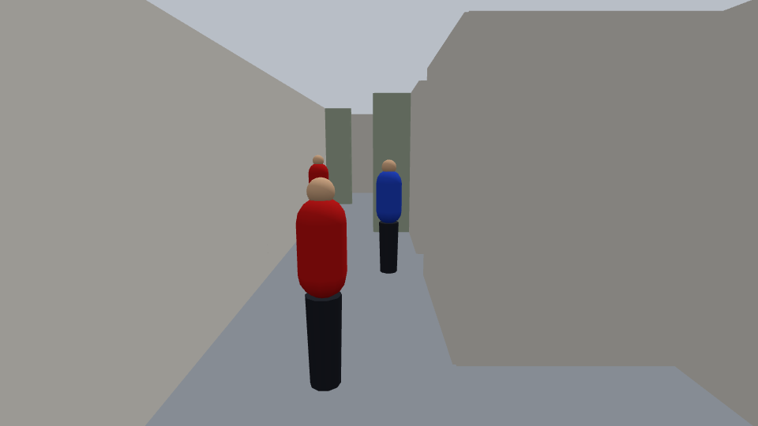
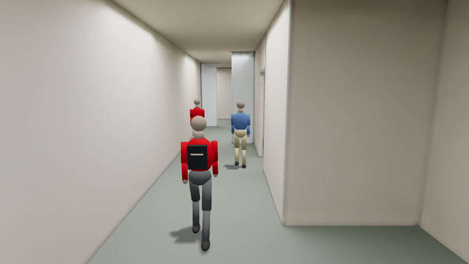
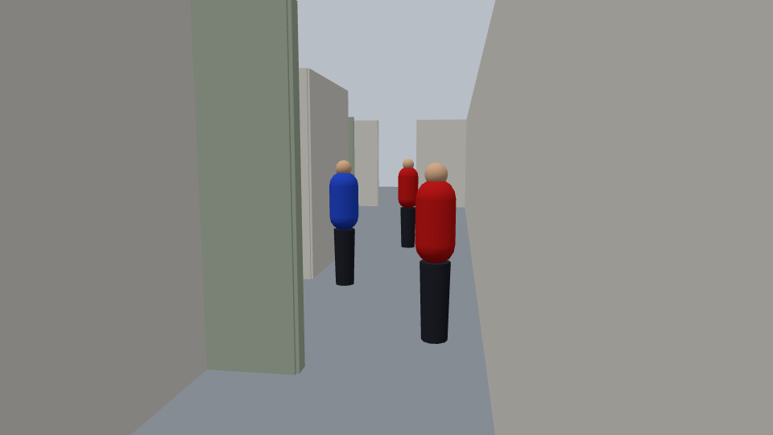
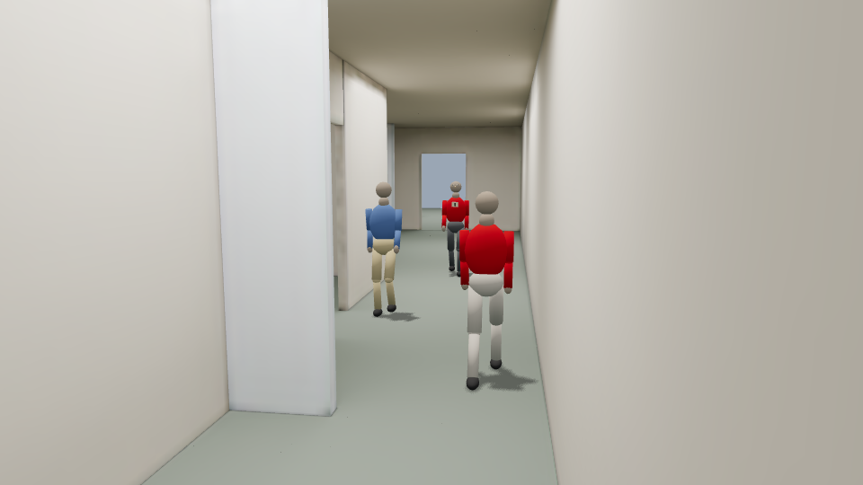

前 · 操作端越肩視角（spike：擠出牆面 + 膠囊）
159 draw calls · 3,048 三角面 · 1.9 ms/幀

後 · N6 烘焙場景 + 骨架人物 + 接觸陰影 + ACES
188 draw calls · 29,802 三角面 · 2.8 ms/幀

前 · 虛擬攝影機 CAM_W2（系統實際收到的像素）
181 draw calls · 3,332 三角面 · 1.9 ms/幀

後 · 虛擬攝影機 CAM_W2
194 draw calls · 30,130 三角面 · 2.7 ms/幀（320×180 時 2.2 ms）
毫秒數是 headless Chrome、Apple M3、960×540、連續 60 幀同步渲染的平均值，各跑一次，機器上有其他負載，只能當粗略參考。人物位置是示意，不是 v2.3 路線的某一刻。